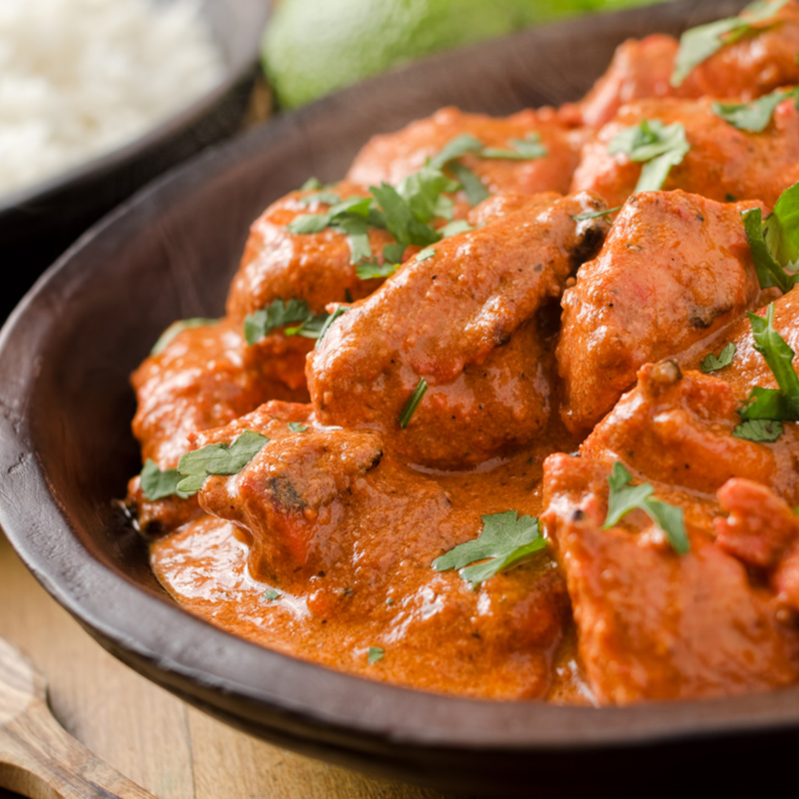

Butter Chicken

Description
Butter chicken like chicken tikka masala, is one of the most popular Indian curries across the world and for all the right reasons. This delicious chicken recipe is also popular by its Hindi name - murgh makhani. The taste of the creamy bright coloured masala with chunks of grilled chicken in it is an unforgettable one and I love mine with some soft rumali rotis, though you can have it with any kind of Indian flatbread too. Like its north Indian origins and name itself suggests good quantities of butter go into the making of this dish. One taste and you are going to wow that this is the best butter chicken you have ever had.
Ingredients
- Boneless chicken cut into 1½ inch pieces 400 grams
- Lemon juice 1 tablespoon
- Kashmiri red chilli powder 1 teaspoon
- Salt to taste
- Butter 2 tablespoons
- For marinade
- Yogurt 1/2 cup
- Ginger paste 2 teaspoons
- Garlic paste 2 teaspoons
- Kashmiri red chilli powder 1/2 teaspoon
- Garam masala powder 1/2 teaspoon
- Salt to taste
- Mustard oil 2 teaspoons
- FOR MAKHNI GRAVY
- Butter 2 tablespoons
- Green cardamom 2
- Clove 2
- Black peppercorns 2-3
- Cinnamon 1 inch piece
- Ginger paste 1 teaspoon
- Garlic paste 1 teaspoon
- Tomato puree 1/2 cup
- Red chilli powder 1/2 teaspoon
- Salt to taste
- Sugar 2 tablespoons
- Kasoori methi 1/2 teaspoon
- Fresh cream 1/2 cup
Steps
- Apply a mixture of red chilli powder, lemon juice and salt to the chicken pieces and set aside for half an hour in the refrigerator.
- Hang the yogurt in a muslin cloth for fifteen to twenty minutes to remove extra water. Add the ginger and garlic pastes, red chilli and garam masala powders, salt and mustard oil.
- Apply this marinade to the chicken pieces and place them in the refrigerator for three to four hours.
- Preheat the oven to 200°C/400°F/Gas Mark 6. String the chicken pieces onto skewers and cook in the preheated oven or a moderately hot tandoor for ten to twelve minutes or until almost done
- Baste with the butter and cook for another two minutes. Remove and set aside.
- To make the makhni gravy, heat the butter in a non-stick pan. Add the green cardamoms, cloves, peppercorns and cinnamon.
- Sauté for two minutes, add the ginger and garlic pastes and sauté for two minutes. Add the tomato puree, red chilli powder, salt and half cup of water.
- Bring the mixture to a boil. Reduce the heat and simmer for ten minutes. Add the sugar or honey and powdered kasoori methi.
- Add the cooked tandoori chicken pieces. Simmer for five minutes and add the fresh cream. Serve hot with naan or parantha.